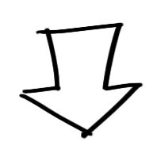

Guía básica de Laravel 8
Creado por: Martín Fenocchio
Cualquier error, reportamélo en Git Hub.

Crear un proyecto de Laravel
En la consola y en la carpeta que quieres, ejecuta:
composer create-project laravel/laravel nombreDelProyecto
Para ejecutarlo en el navegador:
cd nombreDelProyecto
php artisan serve
Abre el link http que se muestra en la consola.
http://127.0.0.1:8000/index
Ejecutará la ruta Index.
Rutas
Las rutas redireccionan según el link que escribas en la barra de direcciones.
En la carpeta Routes\web.php
Ejemplo de ruta:
Route::get('/nombreDelLink', function () {
return 'Hellow world';
});
Para crear la ruta que queramos, cambiamos los valores.
Crear un Controlador
Los controladores son 'gestores' de rutas, que las agrupan facílmente.
Para crear uno, ejecutamos:
php artisan make:controller nombreControlador
En la carpeta App\Http\Controllers\tuControlador
Dentro de la clase, puedes escribir todas las rutas que quieras!
public function nombreLink()
{
return view('nombreLink');
}
Combinado con un route en web.php, funcionará.
Web.php:
Route::get('/nombreDelLink', [nombreControlador::class, 'nombreDelLink']);
Enlazar la base de datos
Debes crear la base, como con PhpMyAdmin.
Luego, ir al archivo .env
Busca: 'DB_DATABASE=' y ponle el nombre de tu base.
Crear una tabla en Laravel
Debes crear un model, con él te
comunicarás con una tabla.
Cada tabla tiene su modelo!
Esto te permite insertar,actualizar y eliminar datos!
Asegúrate de tener bien la conexion a la base!
php artisan make:model nombreDeLaTabla -m
Enivar la tabla
Para crear la tabla debemos migrarla, ejecuta:
Cada tabla tiene su modelo!
Esto te permite insertar,actualizar y eliminar datos!
Asegurate de tener bien la conexion a la base!
php artisan migrate
Con esto, se creará la tabla en tu base!
Añadir un dato
Para añadir un dato a la tabla, debemos ejecutar:
php artisan tinker
Tinker es un modo donde podemos probar nuestra tabla.
Para añadir un dato, ejecuta las 3 líneas:
Seleccionamos la tabla
$report = new App\Models\nombreDeLaTabla();
Escribimos el dato a añadir
$report->columnaDeTuTabla = 'dato a añadir';
Enviamos el dato en la tabla
$report->save()';
Listo! El dato esta en nuestra tabla.
Cómo lo imprimimos?
Con un ForEach, claro.
En nuestro controller, redirigimos a nuestro HTML, así:
public function index()
{
return view(
'rutaDeHTML',
[
'DatosDeLaBase' => nombreDeLaTabla::all()
]
);}
En el HTML, imprimimos la variable:
@foreach ($DatosDeLaBase as $DatoDeLaBase)
< h1> $DatoDeLaBase->columnaDelDato < h1 >
@endforeach
Se imprimirá!